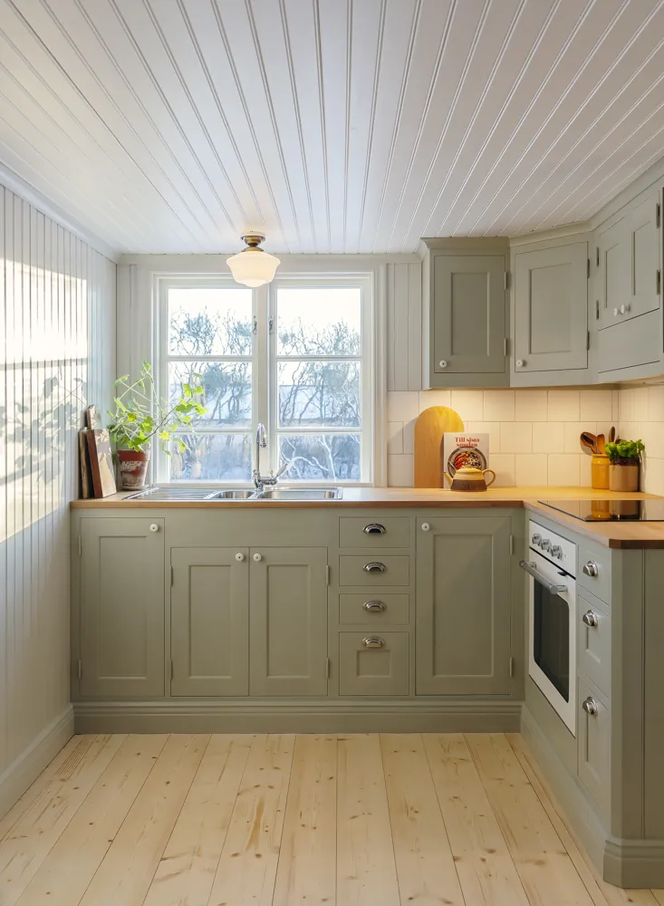
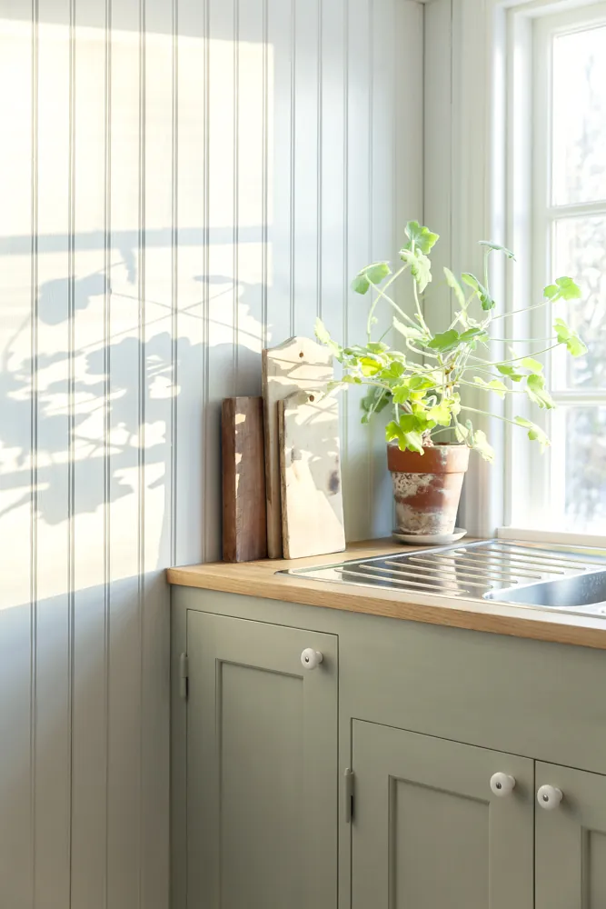
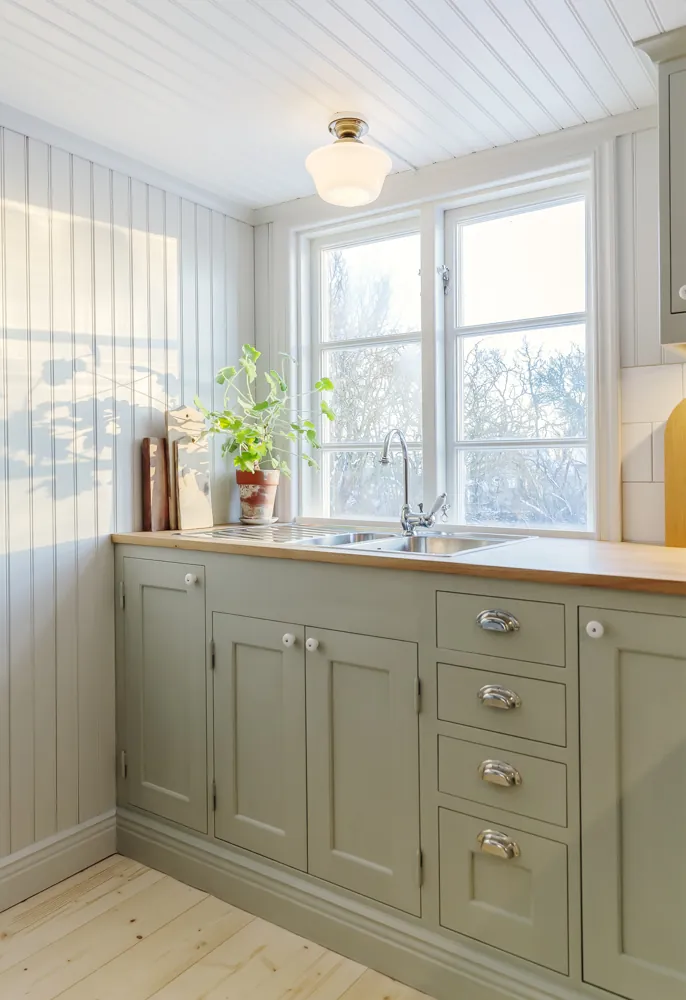
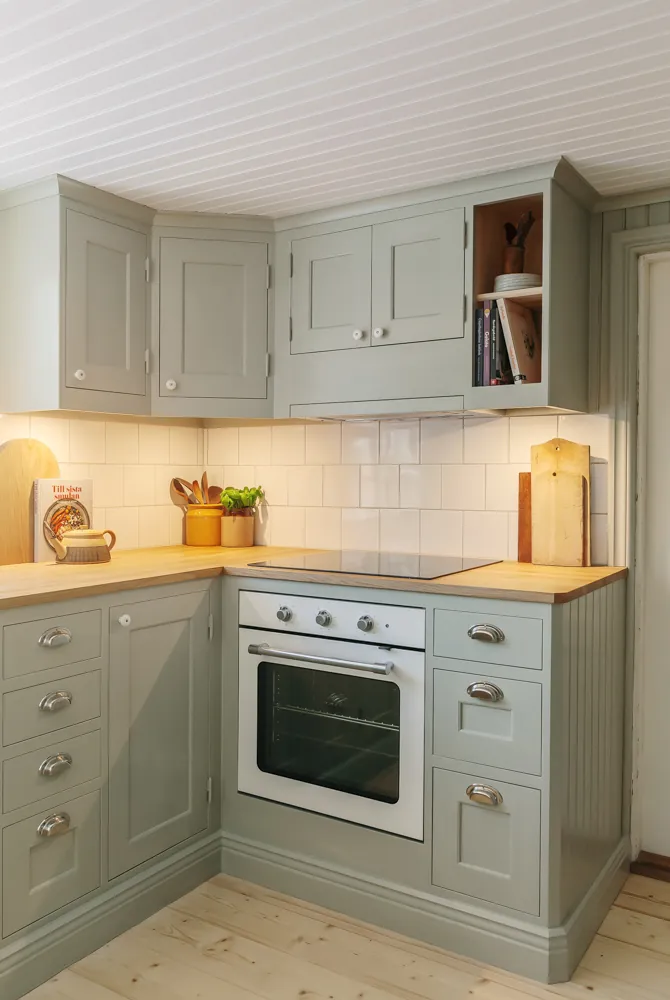
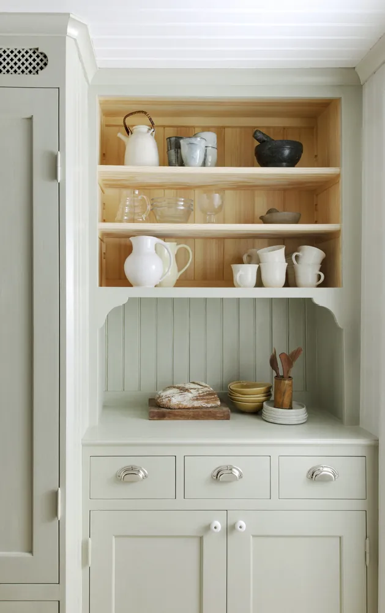
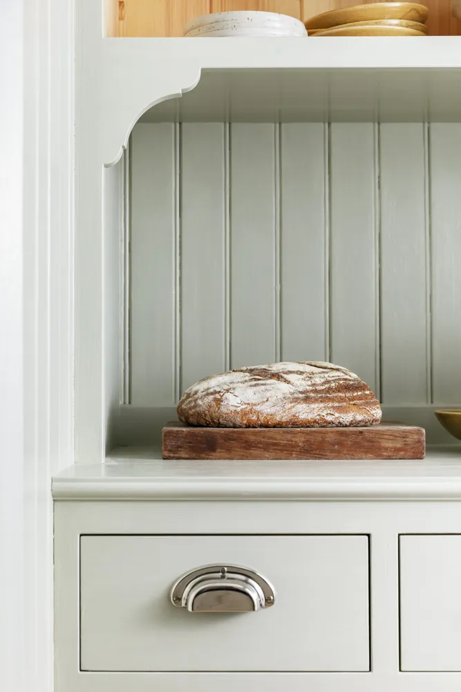
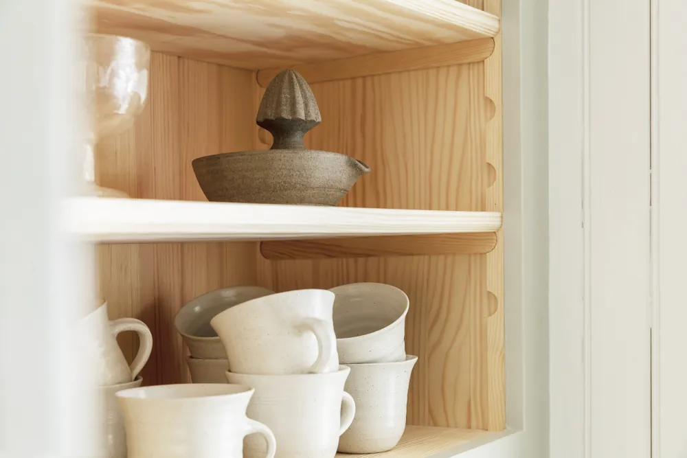
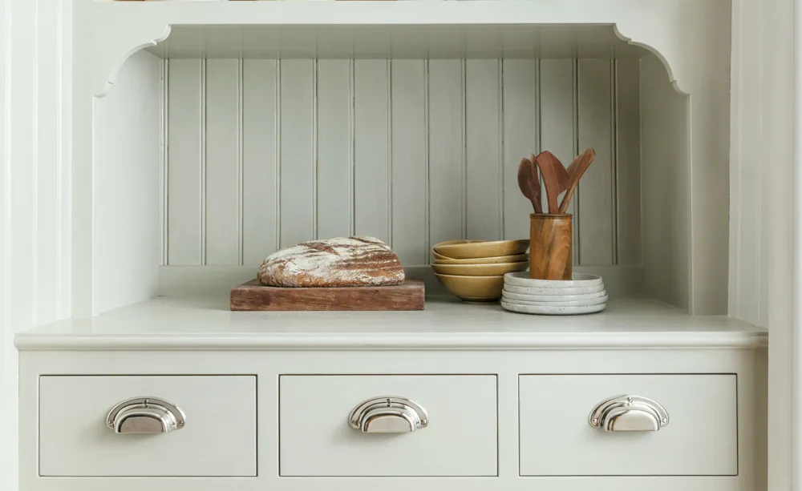
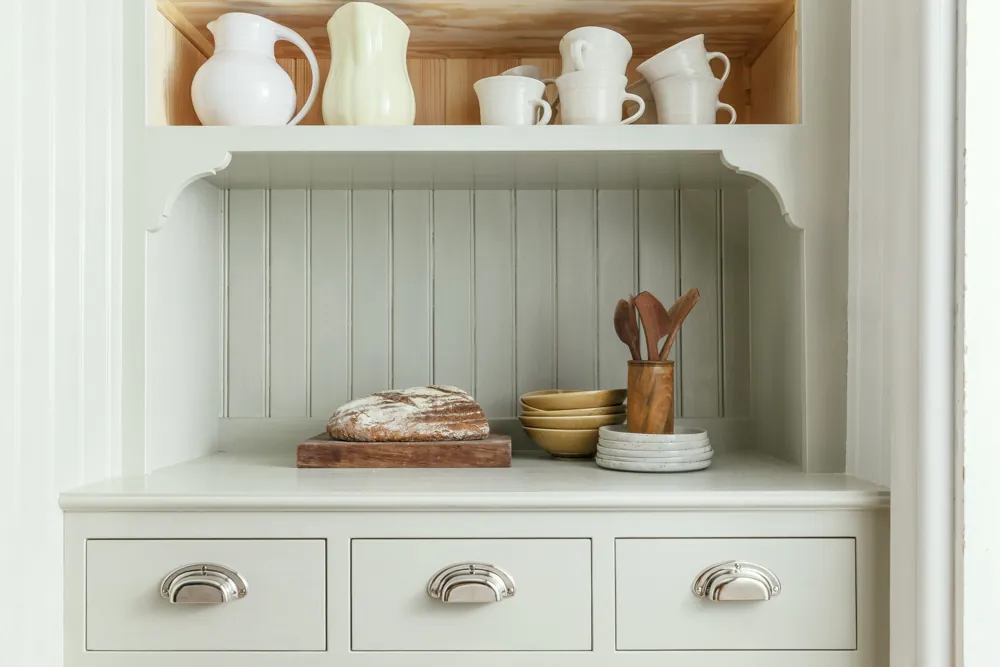
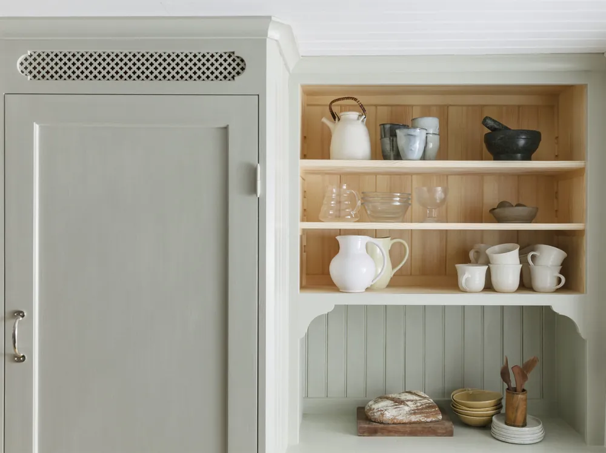

Platsbyggt i Gammalsby
Gammalsby
Drömkök på få kvadrat

Ett massivt träkök som är anpassat efter husets karaktär och möter moderna krav på funktion och förvaringsmöjligheter. Det mesta i detta kök är speciallösningar anpassade efter rummets förutsättningar och mått. De enda skåpen som har standardmått är de som är anpassade efter vitvarorna. Kunden önskade många förvaringsmöjligheter för olika småprylar i sitt kök och därför har jag ritat in flera smålådor och öppna hyllor så att allt kan ha sin egen särskilda plats.



Visa bild

Visa bild

Visa bild

Visa bild

Visa bild

Visa bild

Visa bild

Visa bild

Visa bildEn bra början
Något liknande.
Eller helt ditt eget?
Jag hjälper dig att hitta en lösning för ditt rum, ditt hus och din vardag.